Если бы меня спросили, какая часть технической реализации игры «Цезарь» мне интересна больше других, я бы вспомнил о расчете одного «дня» городской жизни. Отдельные компоненты математической модели города тоже интересны в реализации, но эти «шестеренки» будут крутиться только в сборе. Большая часть игры проходит внутри «игрового цикла», в котором проводятся вычисления параметров компонентов, выполняются перемещения игровых объектов, создаются новые события и объекты. Если вам интересно узнать, как была устроена симуляция города в одной из лучших игр 1998 года — добро пожаловать под кат. Описания, псевдокод и схемы помогут вам лучше узнать об используемых алгоритмах.
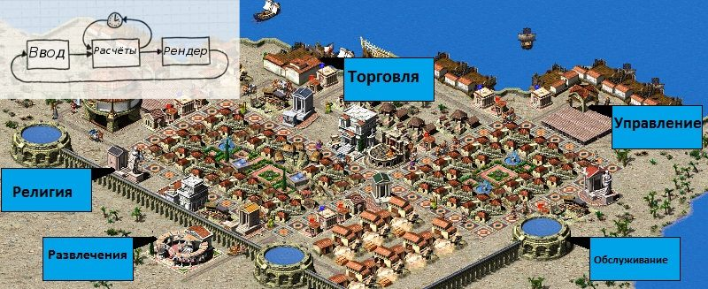
Обсчет одного «дня» в городе авторы игры разбили на несколько шагов, основные из которых приведены ниже, упрощенный код самой функции можно найти под спойлером:
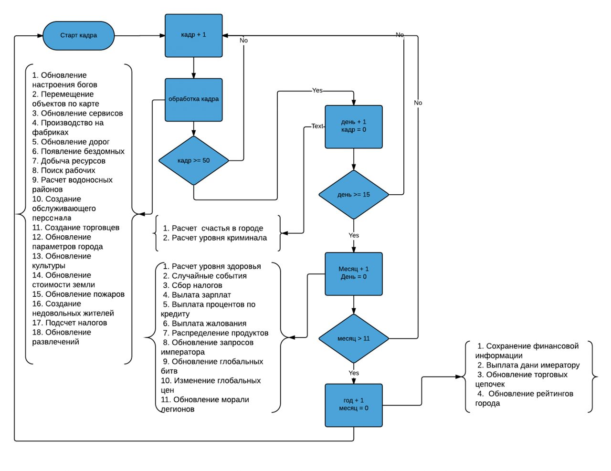
Каждые 50 тиков начинается новый день (16 дней в игровом месяце), для которого вычисляется еще несколько функций, которые не требуют такой частой обработки, а именно:
в первый и восьмой дни месяца рассчитывается уровень счастья горожан и уровень преступности в городе; при смене месяца выполняется проверка возможности проведения фестиваля, уплата налогов, зарплат, подсчет вероятности случайных событий и еще много чего; при смене года выполняется сохранение параметров прошедшего года, обновление рейтингов.
Этапы расчета параметров города1. Расчет настроения: — богов — аборигенов 2. Обновление параметров вторжения войск Цезаря 3. Расчет перемещения групп объектов 4. Сбор информации по амбарам 5. Обновление данных по доступным сервисам для домов 6. Обновление параметров складов 7. Обновление данных советника по населению и поставок пшеницы из рима 8. Обновление потребления товаров в мастерских и материалов в добывающих предприятиях 9. Обновление путей к докам 10. Расчет производства товаров в мастерских 11. Расчет доступности дороги в Рим 12. Обновление населения домов 13. Расчет появления бездомных из перенаселенных домов 14. Расчет распределения рабочих по предприятиям, подсчет безработных, работающих предприятий 15. Обновление области покрытия фонтанов и резервуаров 16. Обновление доступа к воде для домов 17. Обновление состояния групп объектов 18. Расчет появления горожан из обслуживающих зданий 19. Расчет появление торговцев 20. Подсчет типов и количества зданий в городе, подсчет покрытия объектов культуры 21. Расчет распределения казны города между сенатом и форумами 22. Расчет убывания параметров культуры в домах 23. Расчет убывания сервисов в домах 24. Расчет влияния зданий на желательность земли 25. Обновление уровня домов 26. Удаление с карты зданий помеченных для сноса 27. Обновление параметров горящих руин 28. Обновление статуса зданий вокруг пожаров 29. Создание протестующих жителей 30. Расчет параметров сбора налогов 31. Обновление уровня развлечений в домах
Показать код
Этапы расчета параметров города (код) void gameLoop() { while( game.run ) { gametime.ticks++; switch ( gametime.ticks ) { case 1: calculateGodHappiness(1); case 2: changeBackgroundMusic(); case 3: minimap_redraw = 1; case 4: tick_updateCaesarInvasion(); case 5: tick_updateFormations(0); case 6: tick_checkNativeLand(); case 7: determineRoadNetworkIds(); case 8: gatherGranaryStorageInfo(); case 9: ??? case 10: updateHighestInUseBuildingId(); case 11: ??? case 12: buildingDecayHousesCovered(); case 16: tick_resource_recalculateStock(); case 17: updateAdvisorFoodAndSupplyRomeWheat(); case 18: tick_updateCityInfoWorkshopRawMaterialsStored(); case 19: docksDetermineWaterAccess(); case 20: tick_updateIndustryProduction(); case 21: tick_checkPathingAccessToRome(); case 22: updatePopulationInHouses(); case 23: population(); case 24: evictPeopleFromOvercrowdedHouses(); case 25: calculateWorkersNeededPerCategory(); calculateUnemployment(); setBuildingWorkerPercentage(); setBuildingNumWorkersWater(); setBuildingNumWorkers(); case 27: recalculateReservoirAndFountainAccess(); case 28: gametick_updateHouseWaterAccess(); case 29: updateFormations(1); case 30: minimap_redraw = 1; case 31: generateWalkersForBuildings(); case 32: generateTraders(); case 33: countBuildingTypes(); calculateCultureCoverage(); case 34: distributeTreasuryOverForumsAndSenates(); case 35: decayService_culture(); case 36: determineHousingServicesForEvolve(); case 37: calculateDesirabilityOfBuildings(); calculateDesirabilityOfTerrain(); case 38: calculateBuildingDesirability(); case 39: evolveDevolveHouses(); case 40: clearDeletedBuildings(); case 43: updateBurningRuin(); case 44: updateCrimeFireDamage(); case 45: generateCriminal(); case 46: updateDoubleWheatProduction(); case 47: case 48: decayService_taxCollector(); case 49: gatherEntertainmentInfo(); } if( gametime.ticks >= 50 ) { gametime.ticks = 0; doGameDayTick(); } renderCity(); } } Наступление нового дня void doGameDayTick() { ++gametime.totalDays; ++gametime.day; if ( gametime_day > 15 ) { gametime.day = 0; cityinfo.newcomersThisMonth = 0; ++cityinfo.monthsSinceFestival; monthHandle(); ++gametime.month; if ( gametime_month <= 11 ) { updateRatings(0); } else { startNewYear(); } recordMonthlyPopulation(); holdFestival(); } if ( !gametime.day || gametime.day == 8 ) calculateCityHappinessAndCrime(); } Наступление нового месяца void monthHandle() { calculateHealthRate(); handleRandomEvents(); collectMonthlyTaxes(); payMonthlyWages(); payMonthlyInterest(); payMonthlySalary(); housesConsumeMonthlyFood(); handleDistantBattleEvent(); handleInvasionEvent(); checkRequestsEvent(); checkDemandChangesEvent(); checkPriceChangesEvent(); decreaseMonthsLeftToGovernAfterWin(); tickMonth_updateLegionMorale(); playerMessages_updateMessageDelay(); determineGraphicIdsForRoads(); determineGraphicIdsForWater(0, 0, setting_map_width - 1, setting_map_height - 1); calculateOpenGroundCitizen(); sortAndCompactPlayerMessages(); } Наступление нового года void startNewYear() { gametime.month = 0; handleExpandEmpireEvent(); ++gametime.year; gametick_requestBirthsDeaths_calculateHousingTypes(); copyFinanceTaxesToLastYear(); copyFinanceWagesToLastYear(); copyFinanceImportExportToLastYear(); copyFinanceConstructionToLastYear(); copyFinanceInterestToLastYear(); copyFinanceSalaryToLastYear(); copyFinanceSundriesToLastYear(); calculateAndPayTribute(); resetTradeAmounts(); tick_updateFireSpreadDirection(); updateRatings(1); cityinfo.blessingNeptuneDoubleTradeActive = 0; }Религия
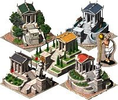
Вначале римляне были язычниками, поклонялись греческим и в меньшей степени этрусским богам. Позже мифологический период сменился увлечением языческими культами. Государство, взяв на себя организацию и проведение ритуалов, создало официальную религию, которая изменила прежние представления о богах. Религия в жизни людей всегда имело большое значение, и компьютерные модели не избежали человеческих предрассудков, авторы игры сильно утрируют понятие благосклонности божества, сводя его к трем состояниям покарал-нейтрален-благословил, но наличие штрафов и премий делает вычисления менее предсказуемыми, также как и наличие элемента случайности при выборе божества.
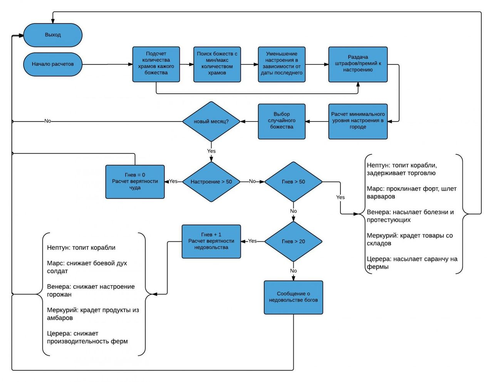
Показать код
Расчет настроения богов и условия гнева\благословенияvoid calculateGodHappiness(int includeBlessingsAndCurses) { maxTemples = 0; maxGod = 10; minTemples = 100000; minGod = 10; cityinfo.maxHappinessCeres = pctReligionCoverageCeres; cityinfo.maxHappinessNeptune = pctReligionCoverageNeptune; cityinfo.maxHappinessMercury = pctReligionCoverageMercury; cityinfo.maxHappinessMars = pctReligionCoverageMars; cityinfo.maxHappinessVenus = pctReligionCoverageVenus; for ( i = 0; i < 5; ++i ) { if ( i ) { switch ( i ) { case 1: numTemples = numLargeTemplesNeptune + numSmallTemplesNeptune; break; case 2: numTemples = numLargeTemplesMercury + numSmallTemplesMercury; break; case 3: numTemples = numLargeTemplesMars + numSmallTemplesMars; break; case 4: numTemples = numLargeTemplesVenus + numSmallTemplesVenus; break; } } else { numTemples = numLargeTemplesCeres + numSmallTemplesCeres; } if ( numTemples >= maxTemples ) { if ( numTemples == maxTemples ) maxGod = 10; else maxGod = i + 1; maxTemples = numTemples; } if ( numTemples <= minTemples ) { if ( numTemples == minTemples ) minGod = 10; else minGod = i + 1; minTemples = numTemples; } } for ( j = 0; j < 5; ++j ) { monthsGodSinceFestival = cityinfo.monthsGodSinceFestival[j]; if ( monthsGodSinceFestival > 40 ) monthsGodSinceFestival = 40; cityinfo.maxGodHappiness[j] += 12; cityinfo.maxGodHappiness[j] -= monthsGodSinceFestival; } if( maxGod ) { if( maxGod < 5 ) { if ( cityinfo.monthsGodSinceFestival[maxGod + 3] >= 50 ) cityinfo.monthsGodSinceFestival[maxGod + 3] = 100; else cityinfo.monthsGodSinceFestival[maxGod + 3] += 50; } } if ( minGod ) { if ( minGod < 5 ) cityinfo.monthsGodSinceFestival[minGod + 3] -= 25; } if ( cityinfo.population >= 100 ) { if ( cityinfo.population >= 200 ) { if ( cityinfo.population >= 300 ) { if ( cityinfo.population >= 400 ) { if ( cityinfo.population >= 500 ) min = 0; else min = 10; } else { min = 20; } } else { min = 30; } } else { min = 40; } } else { min = 50; } for ( k = 0; k < 5; ++k ) { if( cityinfo.maxGodHappiness[k] > 100 ) cityinfo.maxGodHappiness[k] = 100; if( cityinfo.maxHappinessCeres[k] < min ) cityinfo.maxGodHappiness[k] = min; } if ( includeBlessingsAndCurses ) { for ( l = 0; l < 5; ++l ) { if ( cityinfo.godHappiness[l] <= cityinfo.maxGodHappiness[l] ) { if ( cityinfo.godHappiness[l] < cityinfo.maxGodHappiness[l] ) ++cityinfo.godHappiness[l]; } else { --cityinfo.godHappiness[l]; } } for ( m = 0; m < 5; ++m ) { if( cityinfo.godHappiness[m] > 50 ) cityinfo.godSmallCurseDone[m] = 0; if ( cityinfo.godHappiness[m] < 50 ) cityinfo.godBlessingDone[m] = 0; } god = random_7f_1 & 7; if ( god <= 4 ) { if ( cityinfo.godHappiness[god] < 50 ) { if ( cityinfo.godHappiness[god] < 40 ) { if ( cityinfo.godHappiness[god] < 20 ) { if ( cityinfo.godHappiness[god] < 10 ) cityinfo.numBoltsGod[god] += 5; else cityinfo.numBoltsGod[god] += 2; } else { ++cityinfo.numBoltsGod[god]; } } } else { cityinfo.numBoltsGod[god] = 0; } if ( cityinfo.numBoltsGod[god] >= 50 ) cityinfo.numBoltsGod[god] = 50; } if ( !gametime.day ) { for ( n = 0; n < 5; ++n ) ++cityinfo.monthsGodSinceFestival[n]; if ( god > 4 ) { if( determineAngriestGod() ) god = cityinfo.religionAngryGod - 1; } if ( setting.godsOn ) { if ( god <= 4 ) { if( cityinfo.godHappiness[god] < 100 || cityinfo.godBlessingDone[god] ) { if ( cityinfo.numBoltsGod[god] < 20 || cityinfo.godSmallCurseDone[god] || cityinfo.monthsGodSinceFestival[god] <= 3 ) { if ( cityinfo.numBoltsGod[god] >= 50 && cityinfo.monthsGodsSinceFestival[ god ] > 3 ) { cityinfo.numBoltsGod[god] = 0; cityinfo.godHappiness[god] += 30; message.usePopup = 1; if ( god ) // large curse { switch ( god ) { case God_Neptune: if ( cityinfo.numOpenSeaTradeRoutes <= 0 ) { postMessageToPlayer(42, 0, 0); return; } postMessageToPlayer(81, 0, 0); neptuneSinkAllShips(); cityinfo.seaTradeProblemDuration = 80; cityinfo.godCurseNeptuneSankShips= 1; break; case God_Mercury: postMessageToPlayer(43, 0, 0); removeGoodsFromStorageForMercury(1); break; case God_Mars: if ( largeCurseMarsCurseFort() ) { postMessageToPlayer(82, 0, 0); startLocalUprisingFromMars(); } else { postMessageToPlayer(44, 0, 0); } break; case God_Venus: postMessageToPlayer(45, 0, 0); setCrimeRiskForAllHouses(40); increaseSentiment(-10); if( cityinfo.healthRate < 80 ) { if ( cityinfo.healthRate < 60 ) changeHealthRate(-20); else changeHealthRate(-40); } else { changeHealthRate(-50); } cityinfo.godCurseVenusActive = 1; alculateCityHappinessAndCrime(); break; } } else { postMessageToPlayer(41, 0, 0); ceresWitherCrops(1); } } } else { // small curse cityinfo.godSmallCurseDone[ god] = 1; cityinfo.numBoltsCeres[god] = 0; cityinfo.godHappiness[god] += 12; message.usePopup = 1; if ( god ) { switch ( god ) { case God_Neptune: postMessageToPlayer(92, 0, 0); neptuneSinkAllShips(); cityinfo.godCurseNeptuneSankShips = 1; break; case God_Mercury: postMessageToPlayer(93, 0, 0); removeGoodsFromStorageForMercury(0); break; case God_Mars: if ( startLocalUprisingFromMars() ) postMessageToPlayer(94, 0, 0); else postMessageToPlayer(44, 0, 0); break; case God_Venus: postMessageToPlayer(95, 0, 0); setCrimeRiskForAllHouses(50); increaseSentiment(-5); hangeHealthRate(-10); calculateCityHappinessAndCrime(); break; } } else { postMessageToPlayer(91, 0, 0); ceresWitherCrops(0); } } } else { cityinfo.godBlessingDone[god] = 1; message_usePopup = 1; if ( god ) { switch ( god ) { case God_Neptune: postMessageToPlayer(97, 0, 0); cityinfo.blessingNeptuneDoubleTradeActive = 1; break; case God_Mercury: postMessageToPlayer(98, 0, 0); smallBlessingMercuryFillGranary(); break; case God_Mars: postMessageToPlayer(99, 0, 0); cityinfo_blessingMarsEnemiesToKill = 10; break; case God_Venus: postMessageToPlayer(100, 0, 0); increaseSentiment(25); break; } } else // ceres { postMessageToPlayer(96, 0, 0); ceresBlessing(); } } } minHappiness = 100; for ( ii = 0; ii < 5; ++ii ) { if ( cityinfo.godHappiness[ii] < minHappiness ) minHappiness = cityinfo.godHappiness[ii]; } if ( cityinfo.godAngryMessageDelay ) { --cityinfo_godAngryMessageDelay; } else { if ( minHappiness < 30 ) { cityinfo.godAngryMessageDelay = 20; if ( minHappiness >= 10 ) postMessageToPlayer(55, 0, 0); else postMessageToPlayer(101, 0, 0); } } } } } }Настроения в городе
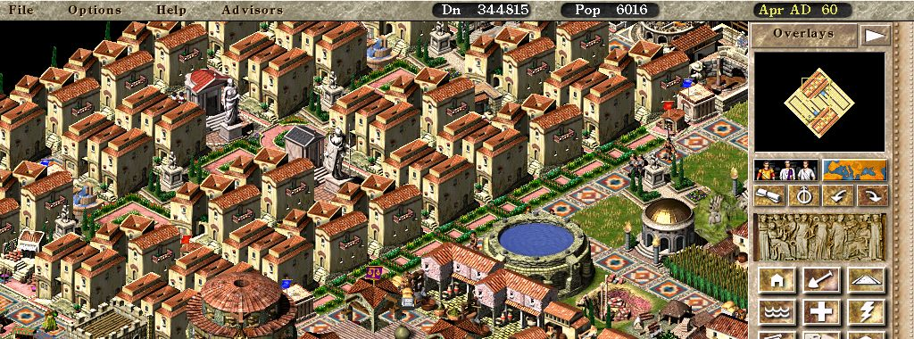
Сами жители реагируют на разницу зарплат между городом и Римом, разнообразие продуктов в городе, уровень налогов и число трущоб. Данный параметр сохраняется для каждого дома и не меняется вне зависимости от соседних домов.
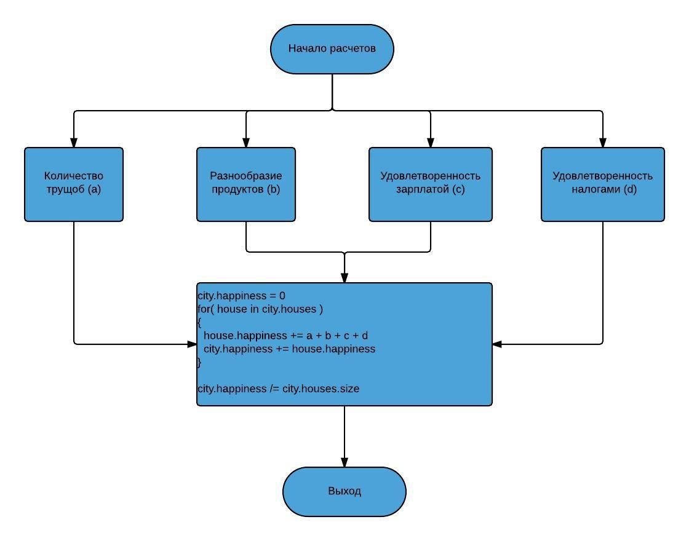
Показать код
Расчет настроения и степени миграции в городеvoid calculateCityHappinessAndCrime() { totalPop = calculatePeopleInHousingTypes(); if ( totalPop < cityinfo.population ) removePeopleFromCensus(ciid, cityinfo.population - totalPop); sentimentContributionTents = 0; sentimentContributionFood = 0; sentimentContributionWages = 0; sentimentContributionTaxes = taxrate_happiness_factor[ cityinfo.taxpercentage ]; diffWage = cityinfo.wages - cityinfo.wagesRome; switch( diffWage ) { >= 7: sentimentContributionWages = 4; >= 4: sentimentContributionWages = 3; > 1: sentimentContributionWages = 2; == 1: sentimentContributionWages = 1; } if ( diffWage < 0 ) { sentimentContributionWages = -diffWage / 2; } switch( cityinfo.unemploymentPercentage ) { > 25: sentimentContributionEmployment = -3; > 17: sentimentContributionEmployment = -2; > 10: sentimentContributionEmployment = -1; < 5: sentimentContributionEmployment = 1; } if( cityinfo.populationSentiment_includeTents > 0 ) { tentPenaltyIfLessTents = getHappinessPenaltyForTentDwellers(); cityinfo.populationSentiment_includeTents = 0; } else { tentPenaltyIfLessTents = 0; cityinfo.populationSentiment_includeTents = 1; } housesNeedingFood = 0; housesCalculated = 0; totalSentimentContributionFood = 0; totalTentPenalty = 0; for( building in city.buildings ) { if ( building.inUse == 1 ) { if ( building.houseSize ) { if ( building.house_population ) { if ( cityinfo.population >= 300 ) { building.house_happiness += sentimentContributionTaxes; building.house_happiness += sentimentContributionWages; building.house_happiness += sentimentContributionEmployment; ++housesCalculated; sentimentContributionFood = 0; sentimentContributionTents = 0; if ( model.houses_foodtypes[ building.level ] > 0 ) // needs food: >= shack { ++housesNeedingFood; sentimentContributionFood = building.houseNumFoods - building.houseHaveFoods; ++totalSentimentContributionFood; } else // tent dwellers { sentimentContributionTents = tentPenaltyIfLessTents; totalTentPenalty += tentPenaltyIfLessTents; } building.house_happiness += sentimentContributionFood; building.house_happiness += sentimentContributionTents; } else { sentimentContributionFood = 0; sentimentContributionEmployment = 0; sentimentContributionTaxes = 0; sentimentContributionWages = 0; sentimentContributionTents = 0; if ( cityinfo.population >= 200 ) building.house_happiness = 50; else building.house_happiness = 60; } } else { building.house_happiness = 60; } } } } if ( housesNeedingFood ) sentimentContributionFood = totalSentimentContributionFood / housesNeedingFood; if ( housesCalculated ) sentimentContributionTents = totalTentPenalty / housesCalculated; totalHappiness = 0; totalHouses = 0; for ( building in city.buildings ) { if( building.inUse == 1 && building.houseSize && building.house_population ) { ++totalHouses; totalHappiness += building.happiness; } } if ( totalHouses > 0 ) cityinfo.citySentiment = totalHappiness / totalHouses; else cityinfo.citySentiment = 60; cityinfo.emigrationCause = 0; worstSentiment = 0; if( sentimentContributionFood < 0 ) { worstSentiment = sentimentContributionFood; cityinfo.emigrationCause = 1; } if ( sentimentContributionEmployment < worstSentiment ) { worstSentiment = sentimentContributionEmployment; cityinfo.emigrationCause = 2; } if ( sentimentContributionTaxes < worstSentiment ) { worstSentiment = sentimentContributionTaxes; cityinfo.emigrationCause = 3; } if ( sentimentContributionWages < worstSentiment ) { worstSentiment = sentimentContributionWages; cityinfo.emigrationCause = 4; } if ( sentimentContributionTents < worstSentiment ) cityinfo.emigrationCause = 5; cityinfo.citySentimentLastTime = cityinfo_citySentiment; }Фестивали
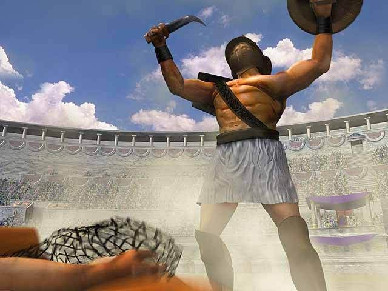
Значительное увеличение настроения в городе дает только первый фестиваль за полные 12 месяцев, второй и последующие только половину. Сделано это для того, чтобы в богатом городе не было возможности поднять настроение только за счет фестивалей. Подготовка к самому фестивалю тоже занимает определенное время, что накладывает ограничение на количество проводимых за год фестивалей.
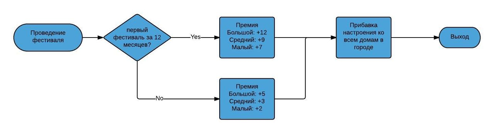
Показать код
Расчет влияния фестиваля на настроение в городеvoid holdFestival() { --cityinfo.monthsSinceFirstFestival; --cityinfo.monthsSinceSecondFestival; if ( cityinfo.plannedFestival_size <= 0 ) return; --cityinfo.plannedFestival_monthsToGo; if( cityinfo.plannedFestival_monthsToGo > 0 ) return; if ( cityinfo.monthsSinceFirstFestival > 0 ) { if ( cityinfo.monthsSinceSecondFestival <= 0 ) { cityinfo.monthsSinceSecondFestival = 12; switch ( cityinfo.plannedFestival_size ) { case smallFestival: increaseSentiment(2); break; case middleFestival: increaseSentiment(3); break; case bigFestival: increaseSentiment(5); break; } } } else { cityinfo.monthsSinceFirstFestival = 12; switch ( cityinf._plannedFestival_size ) { case smallFestival: increaseSentiment(7); break; case middleFestival: increaseSentiment(9); break; case bigFestival: increaseSentiment(12); break; } } cityinfo.monthsSinceFestival = 1; switch ( cityinfo.plannedFestival_size ) { case smallFestival: postMessageToPlayer(38, 0, 0); break; case middleFestival: postMessageToPlayer(39, 0, 0); break; case bigFestival: postMessageToPlayer(40, 0, 0); break; } cityinfo.plannedFestival_size = 0; cityinfo.plannedFestival_monthsToGo = 0; }Выплата подати императору
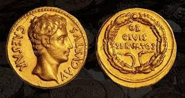
Выплата дани императору. Количество денег, которое в конце года требуется выплатить из казны зависит от прибыли города и от количества проживающих людей. Первый фактор означает выплату четверти полученных за год денег, но не менее некоторой суммы, которая зависит от текущего населения. Если же город не может выплатить этих денег, то правитель расплачивается снижением благосклонности императора, причем учитываются и прошлые года невыплат, так что недовольство накапливается при длительных неуплатах дани.
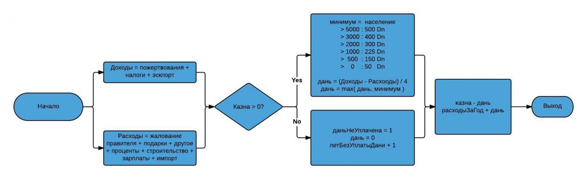
Показать код
Расчет имперской четвертины за последний годvoid calculateAndPayTribute() { cityinfo.finance_donated_lastyear = cityinfo.finance_donated_thisyear; cityinfo.finance_donated_thisyear = 0; cityinfo.tributeNotPaid = 0; income = cityinfo.finance_donated_lastyear + cityinfo.finance_taxes_lastyear + cityinfo.finance_exports_lastyear expenses = cityinfo.finance_sundries_lastyear + cityinfo.finance_salary_lastyear + cityinfo.finance_interest_lastyear + cityinfo.finance_construction_lastyear + cityinfo.finance_wages_lastyear + cityinfo.finance_imports_lastyear if ( cityinfo.treasury > 0 ) { switch( cityinfo.population ) { > 5000: cityinfo.finance_tribute_lastyear = 500; > 3000: cityinfo.finance_tribute_lastyear = 400; > 2000: cityinfo.finance_tribute_lastyear = 300; > 1001: cityinfo.finance_tribute_lastyear = 225; > 501: cityinfo.finance_tribute_lastyear = 150; > 0: cityinfo.finance_tribute_lastyear = 50; } if ( income > expenses ) { cityinfo.tributeNotPaidYears = 0; realTribute = adjustWithPercentage(income - expenses, 25); if ( realTribute > cityinfo.finance_tribute_lastyear ) cityinfo.finance_tribute_lastyear = realTribute; } } else { cityinfo.tributeNotPaid = 1; ++cityinfo.tributeNotPaidYears; cityinfo.finance_tribute_lastyear = 0; } cityinfo.treasury -= cityinfo.finance_tribute_lastyear; expenses += cityinfo.finance_tribute_lastyear; calculateTributeThisYear(); cityinfo.finance_balance_lastyear = cityinfo.treasury; cityinfo.finance_totalIncome_lastyear = income; cityinfo.finance_totalExpenses_lastyear = expenses; }Случайные события
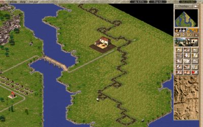
Случайные события. В игре доступно 7 случайных событий, за их возникновение отвечает набор флагов, которые можно менять в редакторе миссий. Случайное событие возникает если генератор выбросил его тип и оно разрешено в сценарии. Разработчики сделали следующие типы: понижение/повышение зарплаты в Риме, проблемы с торговлей морской или наземной, отравление колодцев, обрушение шахт и затопление карьеров и глиняных ям. Землятрясение задается в редакторе, имеет время и точку возникновения, распространяется случайно по четырем направлениям.
Показать код
Случайные событияvoid handleRandomEvents() { event = randomEvent.probability[random_7f_1]; if ( event > 0 ) { switch ( event ) { case 1: if ( scn_event_raiseWages ) { if ( cityinfo.wagesRome < 45 ) { cityinfo.wagesRome += (random_7f_2 & 3) + 1; if ( cityinfo.wagesRome > 45 ) cityinfo.wagesRome = 45; message_usePopup = 1; postMessageToPlayer(68, 0, 0); } } break; case 2: if ( scn_event_lowerWages ) { if ( cityinfo.wagesRome > 5 ) { cityinfo.wagesRome -= (random_7f_2 & 3) + 1; message_usePopup = 1; postMessageToPlayer(69, 0, 0); } } break; case 3: if ( scn_event_landTradeProblem ) { if ( cityinfo.numOpenLandTradeRoutes > 0 ) { cityinfo.landTradeProblemDuration = 48; message_usePopup = 1; if ( scn_climate == Climate_Desert ) postMessageToPlayer(65, 0, 0); else postMessageToPlayer(67, 0, 0); } } break; case 4: if ( scn_event_seaTradeProblem ) { if ( cityinfo.numOpenSeaTradeRoutes > 0 ) { cityinfo.seaTradeProblemDuration = 48; message_usePopup = 1; postMessageToPlayer(66, 0, 0); } } break; case 5: if ( scn_event_contaminatedWater ) { if ( cityinfo.population > 200 ) { if ( cityinfo.healthRate <= 80 ) { if ( cityinfo.healthRate <= 60 ) changeHealthRate(-25); else changeHealthRate(-40); } else { changeHealthRate(-50); } message_usePopup = 1; postMessageToPlayer(70, 0, 0); } } break; case 6: if ( scn_event_ironMineCollapse ) { gridOffsetIronmine = destroyFirstBuildingOfType(B_IronMine); if ( gridOffsetIronmine ) { message_usePopup = 1; postMessageToPlayer(71, 0, gridOffsetIronmine); } } break; case 7: if ( scn_event_clayPitFlooded ) { gridOffsetClaypit = destroyFirstBuildingOfType(B_ClayPit); if ( gridOffsetClaypit ) { message_usePopup = 1; postMessageToPlayer(72, 0, gridOffsetClaypit); } } break; } } }Здоровье жителей
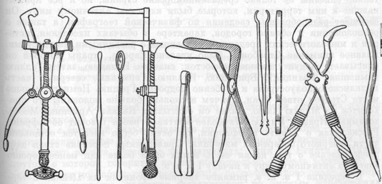
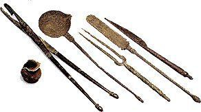
Практикующие врачи сравнительно поздно появились в Риме. Вплоть до II в. до н. э., а в малоимущих слоях общества и много позднее римляне лечились у умудренных жизненным опытом своих сородичей незамысловатыми средствами, которые передавались из поколения в поколение. Эта народная медицина не чуждалась и примитивной магии. Были составлены руководства по земледелию, имеющие целый ряд указаний, как лечить людей и животных, явно следуя народным средствам. В игре клиники и госпитали предоставляют одни и теже услуги, но госпитали также нужны для домов высокого уровня для продолжения роста. Здоровье жителей является одним из основных показателей процветания города: эпидемии могут выкашивать целые кварталы и с увеличением населения города число людей умерших при эпидемии будет только расти.
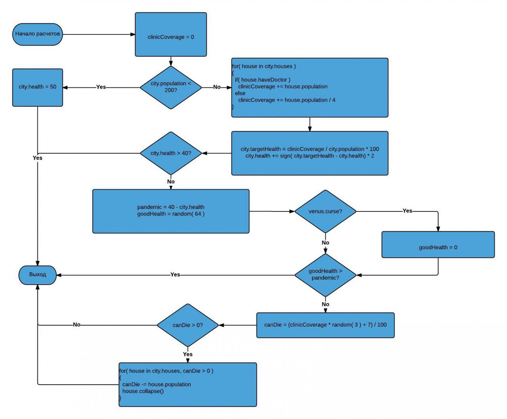
Показать код
Вычисление здоровья и вероятности эпидемии в городеvoid calculateHealthRate() { population = 0; populationWithDoctors = 0; if ( cityinfo.population < 200 ) { cityinfo.healthRate = 50; cityinfo.calculatedTargetHealthRate = 50; return; } for( building in city.buildings ) { if ( building.inUse == 1 && building.houseSize > 0 && building.house_population > 0 ) { population += building.house_population; if ( building.hasClinicService ) populationWithDoctors += building.house_population; else populationWithDoctors += building.house_population / 4; } } cityinfo.calculatedTargetHealthRate = getPercentage(populationWithDoctors, population); cityinfo.healthRate += sign( cityinfo.healthRate - cityinfo.calculatedTargetHealthRate ) * 2; cityinfo.healthRate = bound( 0, cityinfo.healthRate, 100 ); if ( cityinfo.healthRate >= 40 ) return; pandemicChance = 40 - cityinfo.healthRate; goodHealthPeople = random_7f_1 & 0x3F; if ( cityinfo.godCurseVenusActive ) goodHealthPeople = 0; cityinfo.godCurseVenusActive = 0; if ( goodHealthPeople > pandemicChance ) return; howPeopleCanDie = adjustWithPercentage(populationWithDoctors, (random_7f_1 & 3) + 7); if ( howPeopleCanDie > 0 ) { howPeopleCanDie = howPeopleCanDie - cityinfo.numHospitalWorkers; changeHealthRate(10); if( howPeopleCanDie > 0 ) { if ( cityinfo.numHospitalWorkers > 0 ) postMessageToPlayer(103, 0, 0); else postMessageToPlayer(104, 0, 0); for( building in city.buildings ) { if ( building.inUse == 1 && building.houseSize > 0 && building.house_population > 0 && !building.hasClinicService ) { howPeopleCanDie -= building.house_population; collapseBuildingOnFire(j, 1); if ( howPeopleCanDie <= 0 ) return; } } } else { postMessageToPlayer(102, 0, 0); } } }Сбор налогов
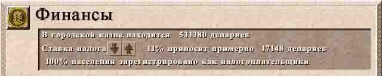
На первых порах город живет за счет поступающих налогов, хотя они достаточно скромные. Сборщик налогов должен так же как например, доктор из клиники, проходить рядом с жилыми домами с определенной периодичностью. Если жилой дом бесперебойно посещается сборщиками налогов, то он каждый месяц будет платить налог.
То сколько жилой дом будет платить в месяц, зависит от:
— процентной ставки установленной у советника по финансам (регулируется от 0 до 25 %); — количества людей проживающих в доме, на момент сбора налогов (т. е. при смене месяца); — уровня развития дома (в игровом файле «c3_model.txt», данные по жилым домам, 20-ая колонка — это число является 200 процентным налогом в месяц с одного человека, проживающего в данном уровне развития жилого дома).
Проанализировав функцию можно сделать вывод, что плавное поднятие налогов никак не отличается от быстрого изменения. Налоги влияют на настроение ваших жителей, но нет смысла повышать зарплату своих рабочих более чем на 8 единиц, по отношению к зарплате которую платит Рим.
Что такое 200-процентный налог, это (вероятно) желание разработчиков сэкономить на операции приведения к меньшему целому, в этом блоке:
collectedPatricians = adjustWithPercentage( cityinfo.monthlyCollectedTaxFromPatricians / 2, cityinfo.taxpercentage );
кода видно, что собранные налоги делятся на 2. Чтобы не получить ситуацию, когда дом может заплатить больше положенного был введен налог * 2, а при вычислениях мы всегда будем получать значение меньшее или равное правильному.
На более высоких уровнях развития города, он вполне может жить только за счет налогов:
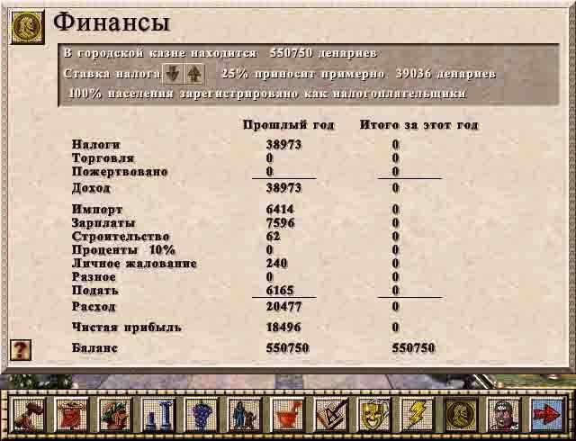
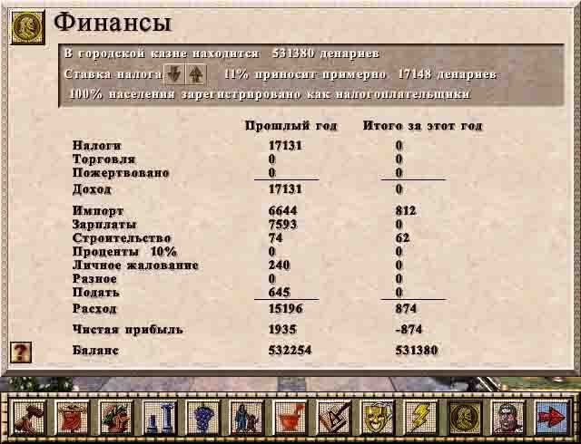
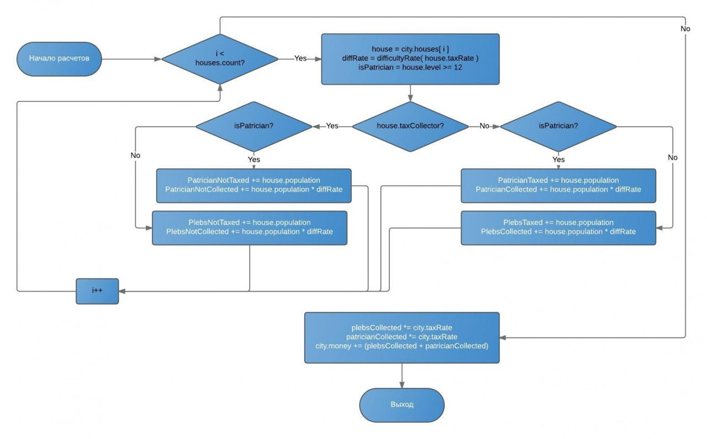
Показать код
Вычисление полученных за месяц налоговvoid __cdecl fun_collectMonthlyTaxes() { cityinfo.numPlebsTaxed = 0; cityinfo.numPatriciansTaxed = 0; cityinfo.numPlebsNotTaxed = 0; cityinfo.numPatriciansNotTaxed = 0; cityinfo.monthlyUncollectedTaxFromPlebs = 0; cityinfo.monthlyCollectedTaxFromPlebs = 0; cityinfo.monthlyUncollectedTaxFromPatricians = 0; cityinfo.monthlyCollectedTaxFromPatricians = 0; for ( i = 0; i < 20; ++i ) cityinfo.societyGraph[ i ] = 0; for ( house in city.houses ) { isPatrician = house.level >= 12; trm = adjustWithPercentage( model_houses.tax[ house.level ], difficulty.moneypct[setting.difficulty] ); cityinfo.societyGraph[ house.level ] += house.population; if (house.taxcollector > 0 ) { if ( isPatrician ) cityinfo.numPatriciansTaxed += house.population; else cityinfo.numPlebsTaxed += house.population; tax = house.population * trm; house.taxIncomeThisYear += tax; if ( isPatrician ) cityinfo.monthlyCollectedTaxFromPatricians += tax; else cityinfo.monthlyCollectedTaxFromPlebs += tax; } else { if ( isPatrician ) cityinfo.numPatriciansNotTaxed += house.population; else cityinfo.numPlebsNotTaxed += house.population; if ( isPatrician ) cityinfo.monthlyUncollectedTaxFromPatricians += house.population * trm; else cityinfo.monthlyUncollectedTaxFromPlebs += house.population * trm; } } collectedPatricians = adjustWithPercentage( cityinfo.monthlyCollectedTaxFromPatricians / 2, cityinfo.taxpercentage ); cityinfo.yearlyTaxFromPatricians += collectedPatricians; collectedPatricians2 = collectedPatricians; collectedPlebs = adjustWithPercentage( cityinfo.monthlyCollectedTaxFromPlebs / 2, cityinfo.taxpercentage ); cityinfo.yearlyTaxFromPlebs += collectedPlebs; totalCollectedTax = collectedPlebs + collectedPatricians2; cityinfo.yearlyUncollectedTaxFromPatricians += adjustWithPercentage( cityinfo.monthlyUncollectedTaxFromPatricians/ 2, cityinfo.taxpercentage); cityinfo.yearlyUncollectedTaxFromPlebs += adjustWithPercentage( cityinfo.monthlyUncollectedTaxFromPlebs / 2, cityinfo.taxpercentage); cityinfo.treasury += totalCollectedTax; cityinfo.percentagePlebsRegisteredForTax = getPercentage( cityinfo.numPlebsTaxed, cityinfo.numPlebsNotTaxed + cityinfo.numPlebsTaxed ); cityinfo.percentagePatriciansRegisteredForTax = getPercentage( cityinfo.numPatriciansTaxed, cityinfo.numPatriciansNotTaxed + cityinfo.numPatriciansTaxed ); cityinfo.percentageRegisteredForTax = getPercentage( cityinfo.numPlebsTaxed + cityinfo_numPatriciansTaxed, cityinfo.numPlebsNotTaxed + cityinfo.numPlebsTaxed + cityinfo.numPatriciansNotTaxed + cityinfo.numPatriciansTaxed ); }Потребление продуктов
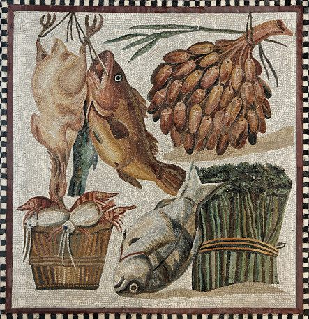
Люди едят Х количества пищи, независимо от того сколько у них видов еды. Съедаемое количество еды зависит только от количества человек проживаемых в доме (10 человек съедает 5 единиц еды в месяц) Например: есть жилой дом 20-го уровня, полностью заселенный т. е. в нём проживает 200 человек им необходимо 3 вида еды. Они в месяц будут съедать общее количество еды равное 200/10*5 = 100 единицам, эти 100 единиц распределятся между тремя необходимыми видами еды, скорей всего поровно, т. е. по 100/3 = 33.
Показать код
Вычисление потребления для домовvoid housesConsumeMonthlyFood() { gatherFoodInformation(); cityinfo.foodTypesEaten = 0; totalConsumed = 0; for ( building in city.houses ) { numTypes = model_houses.foodtypes[ building.level ]; foodToConsumePerType = adjustWithPercentage( building.population, 50); if ( numTypes > 1 ) foodToConsumePerType /= numTypes; building.houseNumFoods = 0; if ( scn_romeSuppliesWheat ) { cityinfo.foodTypesEaten = 1; cityinfo.foodTypesAvailable = 1; building.foodstocks[0] = foodToConsumePerType; building.houseNumFoods = 1; } else { if ( numTypes > 0 ) { for ( j = 0; ; ++j ) { if ( j < 4 ) { if (building.foodstocks[j] < foodToConsumePerType ) { if ( building.foodstocks[j] ) { building.foodstocks[j] = 0; ++building.houseNumFoods; totalConsumed += foodToConsumePerType; } } else { building.foodstocks[j] -= foodToConsumePerType; ++building.houseNumFoods; totalConsumed += foodToConsumePerType; } if ( building.houseNumFoods > cityinfo.foodTypesEaten ) cityinfo.foodTypesEaten = building.houseNumFoods; if ( building.houseNumFoods < numTypes ) continue; } break; } } } } cityinfo.foodConsumedLastMonth = totalConsumed; cityinfo_foodStoredLastMonth = cityinfo_foodStoredSoFarThisMonth; cityinfo_foodStoredSoFarThisMonth = 0; }Производство товаров
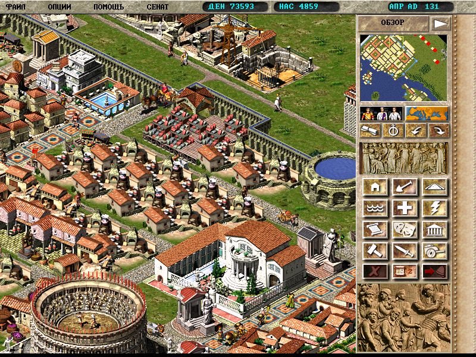
Иногда для производства товаров городу нужно импортировать материалы. Восемь мастерских работают стабильно с одним складом, еще две с перебоями: импорт, зависит от количества мастерских и от количества материалов, которые может предоставить торговый партнер. Экспорт можно численно регулировать, а импортируется сырье пропорционально запросу мастерских. Поэтому при небольшом количестве мастерских склад просто не будет закупать сырье про запас.
Подсчет рейтинга благосостояния
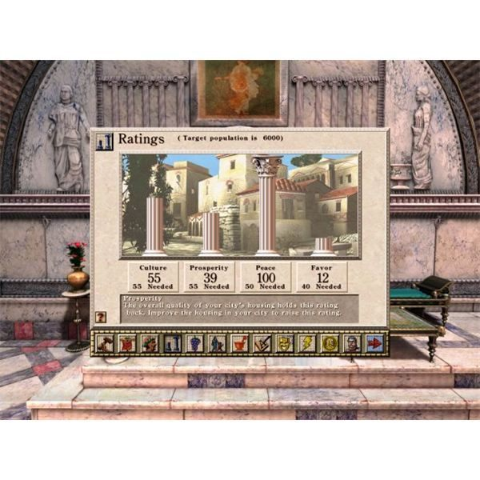
Рейтинг благосостояния в игре является самым «тяжелым» для подъема, с одной стороны любой проступок со стороны правителя ведет к его снижению, с другой — максимальный прирост уровня составляет 2 пункта, т.е. при соблюдении всех правил отметку в 50 пунктов город достигнет минимум через 25 лет, без учета штрафов и премий.
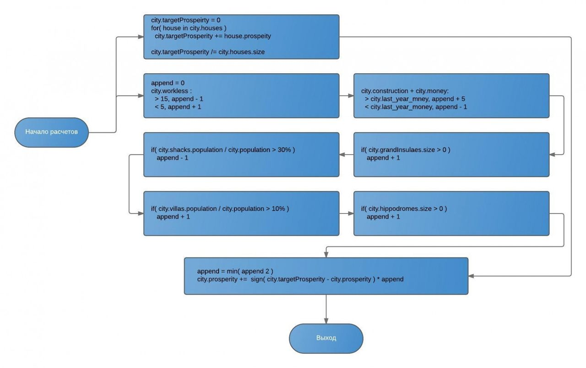
Показать код
Подсчет уровня благосостояния городаvoid updateProsperityRating() { labor = 0; if ( cityinfo.unemploymentPercentage >= 5 ) { if ( cityinfo.unemploymentPercentage >= 15 ) labor = -1; // -1 Unemployment rate is above 15% } else { labor = 1; // +1 Less than 5% unemployment } if ( cityinfo.finance_construction_lastyear + cityinfo.treasury <= cityinfo.treasury_lastyear_prosperity ) increase = labor - 1; // -1 Losing money else increase = labor + 5; // +5 Making a profit cityinfo.treasury_lastyear_prosperity = cityinfo.treasury; if ( cityinfo.foodTypesEaten >= 2 )// == grand insula or better ++increase; // +1 There is at least one Grand Insula or better avgWage = cityinfo.wageRatePaid_lastYear / 12; if ( avgWage <= cityinfo.wagesRome + 1 ) { if ( avgWage < cityinfo.wagesRome ) --increase; // -1 Your wages are below Rome's } else { ++increase; // You pay at least 2 Dn more than Rome's wage } poor = getPercentage(cityinfo_peopleInTentsAndShacks, cityinfo_population); rich = getPercentage(cityinfo_peopleInVillasAndPalaces, cityinfo_population); if ( poor > 30 ) --increase; if ( rich > 10 ) ++increase; // +1 10% or more of your population lives in villas if ( cityinfo.tributeNotPaid ) --increase; if ( cityinfo_hippodromeShows > 0 ) ++increase; // +1 Active Hippodrome cityinfo_prosperityRating += increase; if ( cityinfo.prosperityRating > cityinfo.maxProsperity ) cityinfo.prosperityRating = cityinfo.maxProsperity; if ( cityinfo.prosperityRating < 0 ) cityinfo.prosperityRating = 0; if ( cityinfo.prosperityRating > 100 ) cityinfo.prosperityRating = 100; setProsperityRatingExplanation(); }Структуры данных игры
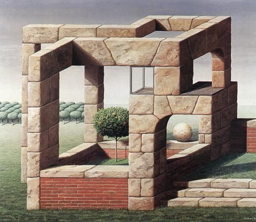
Caesar III оперирует только статическими массивами, поэтому количество зданий, людей, объектов, групп известно заранее. Так, например количество зданий и отображаемых горожан не может быть более 2000, количество групп объектов в городе (волки, овцы, легионы, протестующие) не превышает 50. Такие жесткие ограничения были наложены из-за необходимости работать с ОЗУ меньше 32Мб, из которых половина была занята архивом с текстурами. Ниже я приведу описание текстур с теми полями, физический смысл которых удалось восстановить.
Показать код
(Walker) Описание подвижного объектаstruct Walker { int gridOffset; //смещение на карте (y * mapWidth + x) char inUse; //эта запись активна short nextIdOnSameTile; //следующий объект на этом тайле unsigned char actionState; //текущее состояние объекта (идет, дерется, сидит, ожидает) int tradeCityId; //поле для торговца, из какого города прибыл int direction; //направление движения int buildingId; //номер здания, куда направляется объекта unsigned char y; //позиция внутри тайла unsigned char x; unsigned char byte_7FA360; //dst_x ??? unsigned char byte_7FA361; //dst_y ??? int progressOnTile; //смещение относительно центра тайла, задействуется при повороте карты int tilePosition_y; //абсолютное смещение на карте int tilePosition_x; int destination_x; //точка назначения int destination_y; WalkerType type; //тип объекта int word_7FA344; char byte_7FA34C; char speed; //скорость перемещения char byte_7FA3A6; int state; //предыдущее состояние объекта short baseWorkingBuildingId; //поле для обслуживающего персонала, базовое здание short formationId; //номер группы, в которую входит объект short word_7FA346; char byte_7FA39B; short word_7FA366; short tradeCaravanNextId; //идентификатор следующего объекта в караване, актуально для торговцев и торговки с рынка short itemCollecting; char byte_7FA341; short migrantDestinationHome; //номер дома, куда направляется житель short word_7FA374; short destinationpathId; //номер пути, на который можно переключиться, если будет затор char byte_7FA376; char lastDirection; //предыдущее направление движения short word_7FA3B0; short wlk_ID_mm; short word_7FA3B4; short word_7FA3B6; short word_7FA372; short word_7FA35E; char cartPusherGoodType; //тип товара у носильщика char byte_7FA39C; char byte_7FA39D; char byte_7FA393; char reachedLastStep; //флаг последнего тайла (путь завершен 0/1) char maxLevelOrRiskSeen; //флаг для префекта, что рядом пожар или враг (0\1) char byte_7FA3B8; char byte_7FA342; char byte_7FA3A5; char byte_7FA3A2; char isBoat; //флаг лодки char byte_7FA34D; char byte_7FA39F; char byte_7FA3A7; char byte_7FA3A9; short word_7FA384; short wlk_ID_pp; //номер предка этого объекта, используется для трупов, чтобы знать кто был убит char migrantNumPeopleCarried; //количество жителей в повозке мигранта char mood; ///настроение char byte_7FA389; char byte_7FA3A3; char byte_7FA370; char ruler; //флаг для группы, что этот объект является примером для движения char simpleDirection; //можно ли использовать землю для движения (0 - дороги, 1 - земля и дороги) char byte_7FA39A; char byte_7FA3B9; char at_dest_x; //флаг приближения к конечному тайлу char at_dest_y; short word_7FA3BA; short word_7FA3BC; char prevActionState; //предыдущее состояние обхекта short destinationPathCurrent; //выбранный путь для движения }; (Building) Описание неподвижного объектаstruct Building { BuildingType type; //тип здания int storageId; //номер склада (склад, амбар, док) int x; //положение на карте int y; unsigned char inUse; //флаг активности int house_crimeRisk; //поле используется домом, уровень недовольства int house_size; // (дом) размер в тайлах int house_population; //(дом) население int walkerServiceAccess; //доступность рабочей силы (0-100) int laborCategory; //класс здания (медицина, образование и тд) int word_94BDAC[2]; char byte_94BDB8; int level_resourceId; //уровень дома или необходмые ресурсы (фабрика) int grow_value_house_foodstocks[8]; //(дом) запасы товаров short house_roomForPeople; //(дом) число свободных мест short haveRomeroad; //доступность края карты short house_maxPopEver; //(дом) максимум населения short noContactWithRome; //время без доступа к дороге char enter_x; //точка входа char enter_y; short walkerId; //номер жителя/группы который ассоциирован с этим зданием short laborSeekerId; //номер рекрутера, который обслуживает это производство short immigrantId; // (дом) номер поселенца, который идет к этому зданию short towerBallistaId; // (башня) номер балисты, которая стоит на башне char walkerSpawnDelay; // (производство) время между созданием объектов char byte_94BD6C; char hasFountain; // флаг размещения фонтана рядом со зданием char waterDep; // (фонтан, бани) флаг доступности резервуара с водой short warehouse_prevStorage; //(склад) предыдущий склад short warehouse_nextStorage; //(склад) следующий склад (используется торговцами) short industry_unitsStored; // (фабрика) сколько материалов на складе char house_hasWell; // (дом) доступ к колодцу short num_workers; // (фабрика) сколька присутствует рабочих short fireRisk; //риск пожара short damageRisk; // риск обрушения short industry_outputGood; // (фабрика) сколько товаров на складе short house_theater_amphi_wine; // уровень сервиса актеров short house_amphiGlad_colo; //(дом) уровень сервиса гладиаторов short house_coloLion_hippo; // (дом) уровень сервиса колесниц short house_school_library; //(дом)уровень доступности школ/библиотек short house_academy_barber; // (дом) уровень доступности академий/парикмахера short granary_capacity[4]; // амбар - запасы товаров short house_wheat; // (дом) запасы пшеницы short gridOffset; // смещение на карте города (в тайлах) short wharf_hasBoat_house_evolveStatusDesir; //рыбацкая пристань - сколько лодка набрала рыбы/ дом - флаг недовольства short house_pottery; // (дом) количество посуды short house_oil; // (дом) количество масла short house_furniture; // (дом) количество мебели short house_wine; // (дом) количество вина short house_vegetables; // (дом) количество овощей short size; // размер в тайлах short formationId; // номер группы, которая приписана к этому зданию short placedSequenceNumber; //номер кусочка в сложных зданиях (форт, ипподром) char byte_always0; //??? short cityId; //номер города, к которому принадлежит здание (привет из Цезарь 2) short workersEffectivity; //баф на эффективность производства short burningRuinStep; // анимация для горящих руин char house_bathhouse_dock_numships_entert_days; char byte_94BDBB; char haveProblems; //номер проблемы со зданием char house_entertainment; // (дом) качество развлечений char house_numGods; // (дом) качество религии char house_education; // качество обучения char house_clinic; // (дом) качество здравоохранения char house_hospital_entert_days2; //(патриции) сколько дней с последнего обслуживания хирургом char house_mercury; //(дом) флаг обслуживания богами char house_neptune; char house_mars; char house_venus; char byte_94BDB9; char hasRoadAccess; //флаг доступа к дороге char haveRoadnet; //флаг доступности сената char house_isMerged; //флаг объединения с соседними домами char desirability; //качество территории (-50 до 100) char adjacentToWater; //находится рядом с водой char byte_94BD84; char byte_94BD85; char house_health; //уровень здоровья дома char house_ceres; // char house_taxcollector; //уровень обслуживания сборзиком налогов char byte_94BD7D; }; (EmpireObject) Описание объекта на глобальной картеstruct EmpireObject { char inUse; //эта запись используется char type; //тип (город, торговец, границы, войска) char currentAnimationIndex; //индекс анимации __int16 xCoord; //положение на карте __int16 yCoord; __int16 width; __int16 height; __int16 graphicID; //первая текстура __int16 graphicID_exp; ///вторая текстура char distBattleTravelMonths; // (удаленная битва) через сколько месяцев войска придут в город игрока __int16 xCoord_exp; //координаты для второй текстуры __int16 yCoord_exp; char cityType; //тип города, римский, вражеский, удаленный char cityNameId; //имя города char tradeRouteId; //номер торгового маршрута до города игрока char tradeRouteOpen; //статус торговли __int16 tradeCostToOpen[10]; char citySells[16]; //какие товары продает город char ownerCityIndex; //флаг, что это город игрока char f990D29[10]; char cityBuys[16]; //какие товары покупает город char invasionPathId; //номер нападения char invasionYears; //количество лет до нападения, используется для сообщений о нападениях __int16 trade40; __int16 trade25; __int16 trade15; }; (TradeRoute) Описание торгового марщрутаstruct TradeRoute { char inUse; //запись активна char cityType; //начало маршрута char cityNameId; //конец маршрута char routeId[16]; char isOpen; //маршрут открыт char buysFlag[16]; //что покупаем char sellsFlag[16]; //что продаем char sellsFlag_wine; //на маршруте продается качественное вино __int16 costToOpen; //цена за открытие __int16 unknown10; __int16 walkerEntryDelay; //задержка торговли в днях __int16 unknown0; __int16 empireObjectId; //иконка торговца char isSeaTrade; //флаг морской торговли, используется для выбора текстур отрисовки __int16 walkerId1; //идентификаторы торговцев __int16 walkerId2; __int16 walkerId3; int quotas[16]; //квоты на товары }; Массивы объектовWalker walkers[1000]; //подвижные объекты на карте города Building buildings[2000]; //здания на карте города Formation formations[50]; //группы объектов EmpireObject empireObjects[100]; //объекты на карте империи ModelHouse model_houses[20]; //характеристики дома Storage storages[200]; //параметры амбаров и складов TradeRoute tradeRoutes[200]; //торговые маршруты CityInfo city_inform[8]; //привет из Цезарь 2 (там можно было управлять несколькими провинциями)Благодарности
На волне хабраэффекта последней статьи о математической модели города игра получила «зеленый свет» в стиме , также наша команда получила большое количество пожертвований на IndieGoGo.com. Огромная благодарность хабрасообществу за поддержку ремейка.
Посовещавшись с поклонниками игры Caesar III, мы решили приостановить внесение изменений и сосредоточиться на исправлении багов и баланса, чтобы ветка v0.4 смотрелась и игралась как оригинал. Из заметных изменений осталось только масштабирование карты и некоторое несоответствие логики отдельных юнитов.
К ремейку присоединился художник Дмитрий Плотников, который рисует новый арт
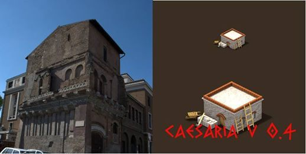
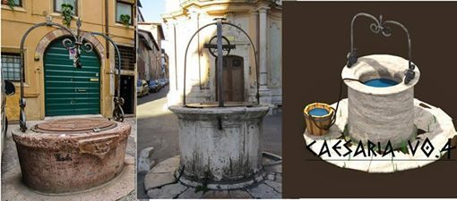
Благодарю SkidanovAlex, Ununtrium, Bick и всем кто помог с переводом текста на indiegogo. Большое спасибо MennyCalavera за поддержку и помощь в продвижении ремейка Отдельная благодарность Анастасии Смольской за переводы статей 1 и 2.
Показать код
изменения и дополнительную информацию по игре можно на странице проекта. Там же можно скачать последние сборки и написать нам о найденных багах.
P.S. Этой статьи не получилось бы без помощи Bianca van Schaik, которая очень много сил и времени потратила на восстановление исходников оригинала.